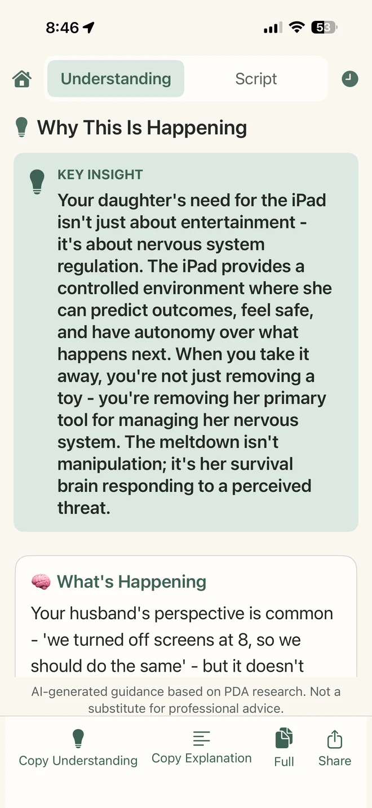
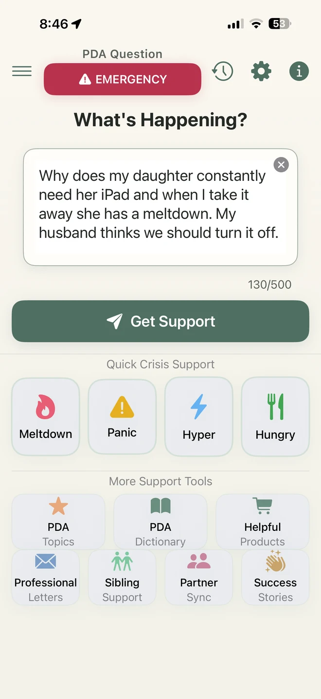
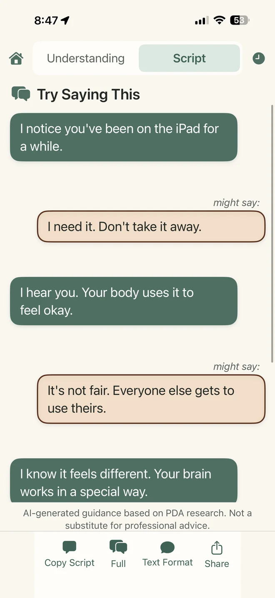
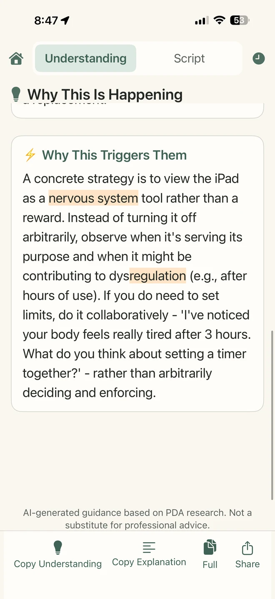
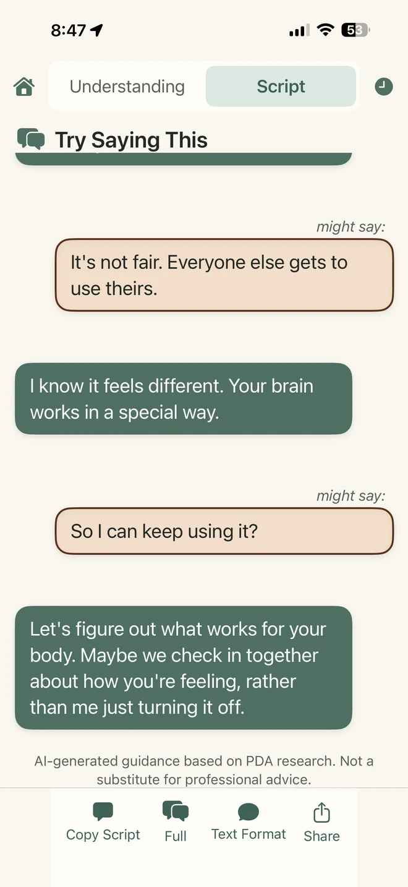
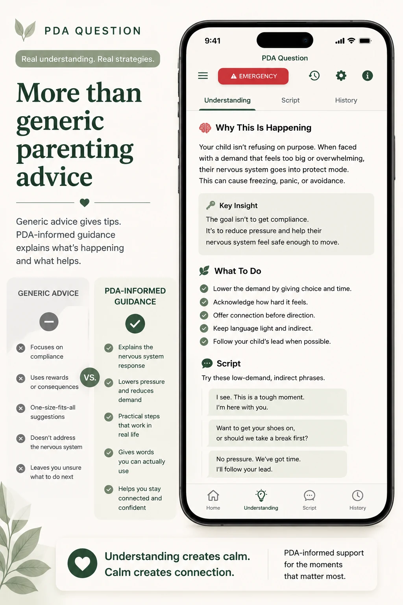
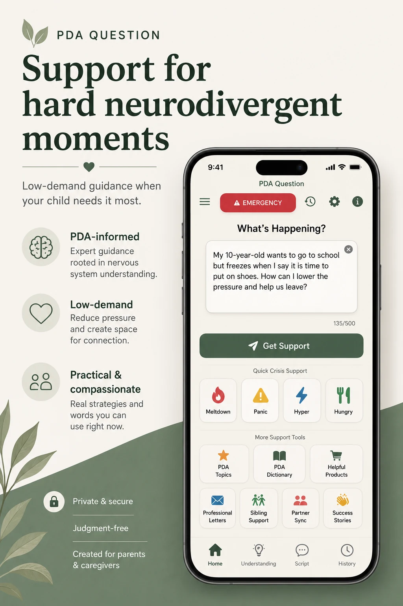

Describe the moment
Enter what is happening in your own words.
Describe what is happening and receive a PDA-informed explanation plus calm, natural words you can use right now.
Built for parents and caregivers navigating PDA, anxiety, OCD, PANS/PANDAS, and overwhelmed nervous systems.


When pressure lands differently, familiar parenting strategies can land differently too.
Move from describing what you see to understanding what may be underneath it—and then to language for the moment.
Enter what is happening in your own words.
Receive a PDA-informed explanation focused on pressure, autonomy, capacity, and felt safety.

Open Script for calm, low-demand language suited to the moment.
Two connected ways to meet a difficult moment with more context and less pressure.
What may be happening beneath the behavior, why common strategies can backfire, and what may help now.
Responses organize the moment around possible pressure, capacity, autonomy, and felt safety.

Calm, natural words to say aloud, send to someone else, or use as self-talk.
Language is framed to reduce pressure and leave room for connection.

Support for familiar situations without judgment or a compliance-first lens.
Look first at overwhelm, safety, and what can be reduced.
Find lower-pressure words when movement itself feels impossible.
Make room for the capacity cost that may only become visible at home.
Consider competing needs while keeping language calm and clear.
PDA Question’s general concepts, strategies, and action plans were developed by comparing recurring ideas across multiple independent educational, professional, research, and lived-experience sources, then translating those shared principles into original, practical guidance.
PDA Question is an educational support tool. It does not provide diagnosis, medical or mental-health treatment, or emergency services.

